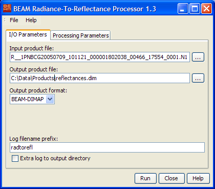
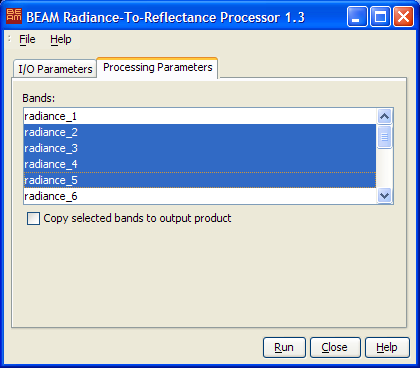

Please note: The chapter BEAM Scientific Data Processors
provides a general description for all BEAM data processors. It describes the common graphical user interface (GUI),
the command-line interface and the common processing request file format.
Radiance Conversion I/O Parameters Tab

- Input product file: Select the input product file by either typing
the product path into the text filed or by pressing the file selection button
 to invoke a
standard file dialog.
to invoke a
standard file dialog.
- Output product file: Select the output product file by either typing
the product path into the text filed or by pressing the file selection button
to invoke a
standard file dialog.
- Output product format: Select one of the available output product
formats.
- Log filename prefix: Select the prefix text used for the logfile
written during processing. For a complete description of the logging capabilities
please refer to the logging documentation.
- Extra log to output directory: Select whether to write an additional
log file to the directory selected tfor the output product.
Radiance Conversion Processing Parameters Tab

- Bands: Select
one or more radiance bands that should be converted into reflectances.
Press "Shift" when clicking in the list to select a range of bands.
Press "Ctrl" when clicking in the list to add a single band to the
selection.
- Copy selected bands to output product: Check this option to copy
all selected radiance bands to the output product.
Radiance Conversion Processing Request File
The following table describes processing request parameters specific
for the Radiance Conversion Processor. For a detailed description of
the processing request file concept and file specification please see
chapter Processing
Request Files.
| Parameter name |
Description |
Type |
Valueset |
| type |
Request type. Mandatory attribute of the Request element |
String |
"RAD_TO_REFL" |
| bands |
Comma separated list of names of radiance bands that should be converted into reflectances |
String |
Product specific |
| copy_bands |
Specifies whether the given radiance bands should be copied to the output product or not |
Boolean |
"true" or "false" |